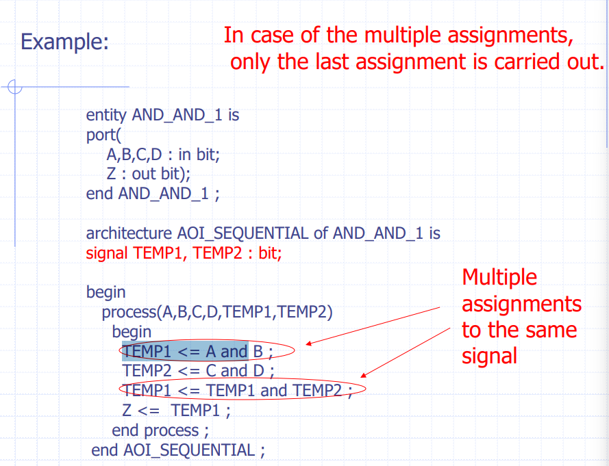
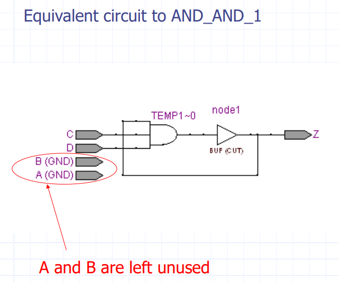
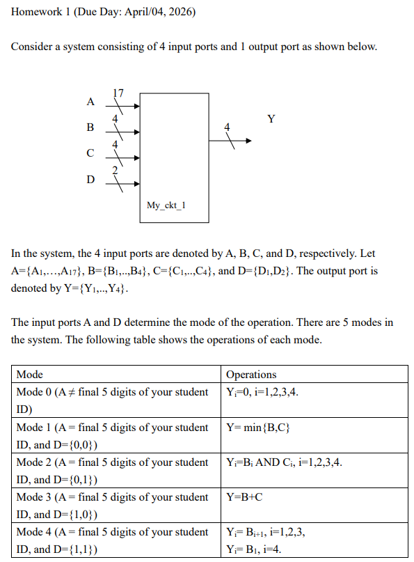

VHDL
目錄
- 1. 先建立整體心智模型
- 2. 最基本的外觀：VHDL 長什麼樣
- 2.1 entity + architecture
- 2.2 註解、大小寫、命名
- 3. 物件宣告：VHDL 不是
type name，而是name : type - 3.1 常見宣告格式
- 3.2 先用 Verilog 直覺理解 constant / variable / signal
- 4. 型別系統：VHDL 比 Verilog 更「強型別」
- 4.1 枚舉型別 enumeration
- 4.2
BIT、BOOLEAN、STD_LOGIC - 4.3 integer 與 range
- 4.4 physical type / TIME
- 5. 陣列與向量：這是你看懂 VHDL 電路描述的核心
- 5.1 array type
- 5.2
BIT_VECTOR、STD_LOGIC_VECTOR - 5.3
to與downto - 5.4 unconstrained array
- 5.5 record type
- 6. 不常拿來綜合，但你要看得懂的型別
- 6.1 subtype
- 6.2 access type
- 6.3 file type
- 7. 運算子：大致上跟 Verilog 很像，但名字有差
- 7.1 邏輯運算
- 7.2 比較運算
- 7.3 位移與旋轉
- 7.4 串接
& - 7.5 其他
- 8. Attributes：VHDL 很有特色的一塊
- 8.1 範圍相關
- 8.2
'EVENT、'ACTIVE、'LAST_EVENT - 8.3
'RANGE、'REVERSE_RANGE - 9. Dataflow model：平行描述硬體
- 9.1 基本 concurrent signal assignment
- 9.2 conditional signal assignment
- 9.3 selected signal assignment
- 10. Behavioral syntax：
process是 Ch3 的主角 - 10.1 process = Verilog always block
- 11.
variable :=與signal <=：這是最大魔王 - 11.1 為什麼 variable 很像 Verilog 的 blocking
= - 11.2 為什麼 signal 不適合拿來存 process 內中間值
- 11.3 sequential signal assignment 與 concurrent signal assignment 的差別
- 12.
if：組合邏輯與時序邏輯都靠它 - 12.1 基本語法
- 12.2 沒有
else會保留前值 → 可能推導出 latch / FF - 12.3 D flip-flop：用
'EVENT - 12.4 非同步 reset
- 12.5
if ... else做組合邏輯 - 13.
for loop：硬體描述裡常拿來展開重複邏輯 - 13.1 基本語法
- 13.2 更漂亮的寫法：
d'RANGE - 14.
case：多工器/解碼器很常見 - 14.1 基本語法
- 14.2 範例：4-to-1 mux
- 15.
wait：另一種控制 process 的方式 - 15.1
wait until類比@(posedge clk) - 15.2 不可以同時有 sensitivity list 和 wait
- 15.3 沒有 sensitivity list 的 process，至少要有一個 wait
- 16. 你在 p.63 前一定要會辨識的三種模板
- 16.1 Dataflow 組合邏輯
- 16.2 process 組合邏輯
- 16.3 process 時序邏輯
- 17. 這份教材脈絡下，你最容易踩的 8 個坑
- 17.1
signal不是單純等於 Verilogwire - 17.2
variable :=才是 process 內中間值的好朋友 - 17.3 同一個 process 裡多次對同一個 signal
<= - 17.4
if少了else，組合邏輯可能變 latch - 17.5 向量方向要看
to/downto - 17.6
when others很重要 - 17.7
out在這份教材的規則下是只寫不讀 - 17.8
library ieee; use ieee.std_logic_1164.all; - 18. 給你一份超濃縮 Verilog → VHDL 速記
- 19. 你現在該怎麼讀 p.63 前的程式
- 19.1 先看它在 architecture 外層，還是 process 裡
- 19.2 看
<=還是:= - 19.3 看 sensitivity list 或 wait
- 19.4 看 if/case 是否補齊
- 19.5 看 vector 方向
- 20. 最後幫你下結論
我先幫你定義範圍：這裡只教你 Ch2 全部，以及 Ch3 到 p.62 為止 的語法；也就是 Behavior Model and Simulation（p.63）之前 的內容，不含 p.63 之後。教材重點確實就是：基本型別/物件 → dataflow → process/sequential → if/loop/case/wait。
1. 先建立整體心智模型
先用你熟的 Verilog 去對照：
flowchart TB
A[Verilog module] --> B[VHDL entity<br>外部介面]
A --> C[VHDL architecture<br>內部實作]
D[assign] --> E[concurrent signal assignment<br>架構中平行執行]
F[always @(*)] --> G[process(sensitivity list)<br>內部循序執行]
H[always @(posedge clk)] --> I[process + if clk'EVENT and clk='1']
J[blocking =] --> K[variable :=<br>立即更新]
L[nonblocking <=] --> M[signal <=<br>排程更新]你只要先記住這 5 句：
- VHDL = entity + architecture
- architecture 外面預設是平行/concurrent
- process 裡面才是循序/sequential
- signal
<=像 Verilog nonblocking - variable
:=像 Verilog blocking 的暫存變數
這五句吃透，你後面大半都會順。
2. 最基本的外觀：VHDL 長什麼樣
2.1 entity + architecture
VHDL 最基本結構：
entity OR_gate is
port(
A, B : in bit;
C : out bit
);
end OR_gate;
architecture OR2_arch of OR_gate is
begin
C <= A or B;
end OR2_arch;
Verilog 類比：
module OR_gate(
input A, B,
output C
);
assign C = A | B;
endmodule
對照方式：
entity：像 module 的介面宣告architecture：像 module 內部實作port (...)：像 input/output 宣告<=在 architecture 外層這種寫法：像assign
教材明確說明，一個基本 VHDL 程式由 entity declaration 與 architecture body 組成；entity 描述外部介面，architecture 描述內部實作。
2.2 註解、大小寫、命名
VHDL 註解是：
-- 這是註解
另外有兩個你要注意：
- 大小寫不敏感
- 識別字第一個字元要是英文字母，最後不能是底線
_
所以 Clock、CLOCK、clock 在 VHDL 裡視為同一個名字。這和 Verilog 很不一樣，Verilog 是大小寫敏感。教材在 Ch2 一開始就特別講了這點。
3. 物件宣告：VHDL 不是 type name，而是 name : type
這是你第一個需要適應的地方。
3.1 常見宣告格式
constant BUS_WIDTH : INTEGER := 8;
variable FOUND, DONE : BOOLEAN;
signal CLOCK : BIT;
signal DATA_BUS : BIT_VECTOR(0 to 7);
signal INIT_P : STD_LOGIC_VECTOR(7 downto 0);
Verilog 類比：
parameter BUS_WIDTH = 8;
reg FOUND, DONE; // 只能說概念上接近，不是完全等價
wire CLOCK;
wire [7:0] INIT_P;
那
signal DATA_BUS : BIT_VECTOR(0 to 7); signal INIT_P : STD_LOGIC_VECTOR(7 downto 0);
有差嗎？
有差：
BIT_VECTOR = 只有 0/1 的向量 STD_LOGIC_VECTOR = 可表達 0/1/X/Z/... 的向量
VHDL 四種物件類別，教材列的是：
constantvariablesignalfile
其中最重要的是前 3 個。教材也說 port 是 signal 物件，generic 是 constant 物件。
3.2 先用 Verilog 直覺理解 constant / variable / signal
constant
像 Verilog parameter。
constant N : integer := 4;
variable
像 process/always block 裡的區域暫存變數，立即更新。
variable temp : bit;
temp := A and B;
signal
像線路上的訊號，不是立刻改值，而是先排程，再更新。
signal Z : bit;
Z <= A and B;
這個差異在 Ch3 是超級重點，因為教材專門拿它做例子。
4. 型別系統：VHDL 比 Verilog 更「強型別」
VHDL 很重型別，你不能像 Verilog 那樣很隨便混著用。這也是初學最常卡住的地方。
4.1 枚舉型別 enumeration
type car_state is (STOP, SLOW, MEDIUM, FAST);
type logic_state is ('0', '1', 'Z');
這很像你自己定義一組合法狀態。Verilog 類比比較接近：
- 傳統 Verilog：
parameter/localparam編碼狀態 - SystemVerilog：
enum
教材也強調，枚舉值的順序有大小關係，所以可以比較 SLOW < FAST。
4.2 BIT、BOOLEAN、STD_LOGIC
BIT
只有 '0'、'1'
signal a : bit;
BOOLEAN
只有 FALSE、TRUE
variable done : boolean;
STD_LOGIC
這是實務上常用的，來自 ieee.std_logic_1164：
library ieee;
use ieee.std_logic_1164.all;
signal x : std_logic;
signal y : std_logic_vector(7 downto 0);
教材列了 STD_LOGIC 的 9 種值：U X 0 1 Z W L H -。
你可以先把它想成：比 Verilog 的 4-state 更細的邏輯系統。至少你看到 Z、X、U 不要嚇到。
4.3 integer 與 range
type INDEX is range 0 to 15;
type WORD_LENGTH is range 31 downto 0;
還有：
a : in integer range 0 to 255;
Verilog 類比比較像：
integer a; // 但 Verilog 不會用這種語法直接綁範圍限制
VHDL 的 range 比較像「這個型別只允許某一段值」。
教材後面 comparator 就用：
a,b : in integer range 0 to 255;
4.4 physical type / TIME
這一段你先以「看得懂」為目標，不用太執著實作。
教材介紹 physical type，最重要是 TIME：
20 ns
5 us
1 ms
這主要拿來模擬、延遲、testbench。
5. 陣列與向量：這是你看懂 VHDL 電路描述的核心
5.1 array type
type ADDRESS_WORD is array (0 to 63) of BIT;
type DATA_WORD is array (7 downto 0) of STD_LOGIC;
type ROM is array (0 to 125) of DATA_WORD;
你可以把它想成：
ADDRESS_WORD：64 個 bitDATA_WORD：8 個 std_logicROM：126 組 8-bit word
Verilog 類比：
wire [63:0] address_word;
wire [7:0] data_word;
reg [7:0] rom [0:125];
教材也有示範可以對整個 array、單一元素、甚至 slice 指派。
5.2 BIT_VECTOR、STD_LOGIC_VECTOR
這兩個你一定會一直看到：
signal RX_BUS : BIT_VECTOR(0 to 5);
signal INIT_P : STD_LOGIC_VECTOR(7 downto 0);
Verilog 類比：
wire [5:0] RX_BUS; // 概念上
wire [7:0] INIT_P;
差別在 VHDL 會把元素型別講得很清楚：
BIT_VECTOR= array ofBITSTD_LOGIC_VECTOR= array ofSTD_LOGIC
教材把這兩個都列成常用 unconstrained array。
5.3 to 與 downto
這個是很多 Verilog 使用者第一次看 VHDL 會卡住的點。
signal areg : bit_vector(0 to 6);
signal breg : bit_vector(6 downto 0);
如果都指定：
areg <= "0000001";
breg <= "0000001";
那：
areg(6) = '1'breg(0) = '1'
也就是說，字串左邊對應 range 的左邊，右邊對應 range 的右邊。
所以你不能只看字面 "0000001"，一定要同時看索引方向。
這跟 Verilog 固定常看 [MSB:LSB] 的直覺不太一樣。教材在 p.35~36 特別示範了這件事。
5.4 unconstrained array
type STACK_TYPE is array (INTEGER range <>) of ADDRESS_WORD;
signal MY_STACK : STACK_TYPE(-127 to 127);
這個概念像是：先定義元素型別與維度形式，真正長度等建立物件時再決定。
很像你先定義一個「模板型 array 型別」。
傳統 Verilog 沒有完全等價、直接同級的語法直覺。
5.5 record type
type MODULE is
record
SIZE : INTEGER range 20 to 200;
CRITICAL_DLY : TIME;
NO_INPUTS : PIN_TYPE;
NO_OUTPUTS : PIN_TYPE;
end record;
Verilog 類比：
- 純 Verilog：幾乎沒有漂亮對應
- SystemVerilog：比較像
struct
教材還示範了 aggregate 指派：
NAND_COMP := (50, 20 ns, 3, 2);
這就像一次把整個結構塞值進去。
6. 不常拿來綜合，但你要看得懂的型別
6.1 subtype
subtype my_integer is integer range 0 to 20;
subtype MIDDLE is DIGIT range '3' to '7';
概念就是：從既有型別切一塊比較小的合法範圍。
像你在 Verilog 裡沒有直接對等，但可類比成「加上更嚴格限制的型別別名」。
6.2 access type
type PTR is access MODULE;
variable MOD_PTR : PTR;
MOD_PTR := new MODULE;
這像 C pointer。教材也直接說，多數 synthesizer 不支援，偏模擬/高階語法。你在 p.63 前如果看到，知道它是「指標型」就夠了。
6.3 file type
file source_data : text is in "source_data.txt";
file output_data : text is out "output_data.txt";
這主要是 testbench / simulation 在用，不是拿來做硬體本體邏輯。教材也明說檔案主要用於 testbench。
7. 運算子：大致上跟 Verilog 很像，但名字有差
教材把運算子分成邏輯、比較、位移、加法、乘法、其他。
7.1 邏輯運算
and or nand nor xor xnor not
注意都是英文，不是符號。
Verilog 對照：
& | ~& ~| ^ ^~ ~
7.2 比較運算
= /= < <= > >=
注意 VHDL 的不等於是 /=，不是 Verilog 的 !=。
7.3 位移與旋轉
sll srl sla sra rol ror
對照：
sll≈<<srl≈>>rol/ror：旋轉，Verilog 沒有直接內建同名運算子
7.4 串接 &
'0' & '1' -- 結果 "01"
Verilog 對照：
{1'b0, 1'b1}
這個你一定常用。
要寫串接用
'1' & '0'，要 and 運算用'1' and '0'
7.5 其他
* / mod abs **
mod：取餘數abs：絕對值**：次方
8. Attributes：VHDL 很有特色的一塊
這部分是讀教材時會頻繁看到的語法糖。
8.1 範圍相關
T'LEFT
T'RIGHT
T'HIGH
T'LOW
例如：
type allowed_value is range 15 downto 0;
那：
allowed_value'LEFT = 15allowed_value'RIGHT = 0allowed_value'HIGH = 15allowed_value'LOW = 0
這組語法在 Verilog 沒有這麼原生、這麼一致的型別 attribute 體系。
8.2 'EVENT、'ACTIVE、'LAST_EVENT
教材特別強調：
clock'EVENT and clock = '1'
代表偵測上升沿。
Verilog 類比就是：
always @(posedge clock)
另外教材也區分：
- S'EVENT：目前這個 delta 內，signal S 有沒有發生「值改變」
- S'LAST_EVENT：距離 上一次 event 已經過了多少時間，它回傳的是一個 time 型別 的值，例如：10 ns、5 us，不是 true/false。
- S'ACTIVE：目前這個 delta 內，signal S 有沒有被指定新值；即使新值和舊值一樣，也算 active
這點很 VHDL，也很重要。
8.3 'RANGE、'REVERSE_RANGE
WBUS'RANGE
WBUS'REVERSE_RANGE
如果：
variable WBUS : BIT_VECTOR(7 downto 0);
那：
WBUS'RANGE = 7 downto 0WBUS'REVERSE_RANGE = 0 to 7
這在寫 loop 時很好用，因為你不用手刻 7 downto 0。教材後面 bit count 例子就直接用 d'RANGE。
9. Dataflow model：平行描述硬體
教材把 dataflow model 定義成：用 concurrent signal assignment 來描述功能。主要有三種：
- 基本 concurrent signal assignment
- conditional signal assignment
- selected signal assignment
9.1 基本 concurrent signal assignment
C <= A or B;
Verilog：
assign C = A | B;
這是最直觀的一種。
放在 architecture 的 begin ... end 之間，但不在 process 裡，就是平行執行。教材也明說 concurrent statements 的位置不重要，信號變化時就會觸發。
9.2 conditional signal assignment
Y <= X1 when S = '1'
else X2;
Verilog 類比：
assign Y = (S == 1'b1) ? X1 : X2;
更長一點可以寫優先鏈：
A <= "00" when B(0) = '1' else
"01" when B(1) = '1' else
"10" when B(2) = '1' else
"11";
這很像一串巢狀 ternary。教材用這個做 priority encoder。
9.3 selected signal assignment
with S select
Y <= X(0) when "00",
X(1) when "01",
X(2) when "10",
X(3) when "11";
Verilog 類比比較像：
always @(*) begin
case (S)
2'b00: Y = X[0];
2'b01: Y = X[1];
2'b10: Y = X[2];
2'b11: Y = X[3];
endcase
end
或某種 case-based continuous selection。
重點差異：
conditional signal assignment：偏 priorityselected signal assignment：偏 case/mux
教材在 Ch2 後段把這兩個並列成 dataflow 的核心語法。
10. Behavioral syntax：process 是 Ch3 的主角
教材明確說：behavior modeling style 的主要機制是 process statement。
10.1 process = Verilog always block
process(A, B, C, D)
variable TEMP1, TEMP2 : bit;
begin
TEMP1 := A and B;
TEMP2 := C and D;
TEMP1 := TEMP1 or TEMP2;
Z <= not TEMP1;
end process;
Verilog 類比：
always @(*) begin
temp1 = A & B;
temp2 = C & D;
temp1 = temp1 | temp2;
Z <= ~temp1; // 概念上類比，不是建議寫法
end
VHDL 規則是：
- sensitivity list 裡任一 signal 發生 event，process 被執行一次
- 內部語句照順序執行
- 跑到最後會 suspend，等下一次 event
這和 Verilog always block 非常接近。
11. variable := 與 signal <=：這是最大魔王
這裡我用一句話講透：
variable :=：現在就改signal <=：先排程，之後才更新
教材直接說 variable assignment 是 executed and updated at the same time；signal assignment 是先執行，再經過一個 delay Δ 才更新。
11.1 為什麼 variable 很像 Verilog 的 blocking =
process(A, B, C)
variable M, N : integer;
begin
M := A;
N := B;
X <= M + N;
M := C;
Y <= M + N;
end process;
這裡 Y 用的是更新後的 M = C。
所以你可以直觀想成 Verilog：
always @(*) begin
M = A;
N = B;
X <= M + N;
M = C;
Y <= M + N;
end
11.2 為什麼 signal 不適合拿來存 process 內中間值
教材有一個反例：如果你把中間值也寫成 signal，像這樣：
signal TEMP1, TEMP2 : bit;
...
process(A,B,C,D,TEMP1,TEMP2)
begin
TEMP1 <= A and B;
TEMP2 <= C and D;
TEMP1 <= TEMP1 and TEMP2;
Z <= TEMP1;
end process;


結果不是你直覺想的那樣。
因為同一次 process 裡對同一個 signal 多次指定，最後一次會生效；而且 signal 不會立即更新。教材甚至畫出等效電路，指出
A、B 被丟著沒用。
這點完全可以用一句 Verilog 忠告記住：
在 VHDL process 裡，要做中間組合運算，優先用 variable，不要用 signal。
11.3 sequential signal assignment 與 concurrent signal assignment 的差別
教材用兩段程式比較：
process 內 sequential signal assignment
process(B)
begin
A <= B;
Z <= A;
end process;
當 B 改變時：
A會在T + Δ變成BZ會在T + Δ取到 舊的 A
architecture 外 concurrent signal assignment
A <= B;
Z <= A;
當 B 改變時：
A在T + Δ更新- 接著
A的 event 觸發下一條 Z在T + 2Δ變成新的A
教材把這兩種情況拆開講得很清楚。這一段你最好反覆讀 2 次。
12. if：組合邏輯與時序邏輯都靠它
12.1 基本語法
if condition then
...
elsif condition then
...
else
...
end if;
Verilog：
if (condition) begin
...
end else if (condition) begin
...
end else begin
...
end
12.2 沒有 else 會保留前值 → 可能推導出 latch / FF
教材明講：if 若缺少 else，某些 signal 在某些情況下沒被指定，就會保留前值，因此可能推導出儲存元件。
例：latch
process(Qin, en)
begin
if en = '1' then
Qout <= Qin;
end if;
end process;
Verilog 類比：
always @(*) begin
if (en)
Qout = Qin; // 沒有 else，可能是 latch
end
12.3 D flip-flop：用 'EVENT
process(Qin, clk)
begin
if (clk'EVENT and clk = '1') then
Qout <= Qin;
end if;
end process;
Verilog：
always @(posedge clk) begin
Qout <= Qin;
end
教材就是這樣教 rising edge 偵測。
12.4 非同步 reset
process(Qin, clk, clr)
begin
if clr = '1' then
Qout <= '0';
elsif (clk'EVENT and clk = '1') then
Qout <= Qin;
end if;
end process;
Verilog：
always @(posedge clk or posedge clr) begin
if (clr)
Qout <= 1'b0;
else
Qout <= Qin;
end
教材明確說這是 asynchronous reset。
12.5 if ... else 做組合邏輯
教材舉 comparator 為例，意思是：
- 沒有 else：常常變成有記憶
- 有 else/elsif 全補齊：比較像 combinational logic
這和 Verilog 的 always @(*) 規則完全一致。
13. for loop：硬體描述裡常拿來展開重複邏輯
13.1 基本語法
for i in 2 downto 0 loop
...
end loop;
Verilog：
for (i = 2; i >= 0; i = i - 1) begin
...
end
教材用 bit count 做例子：
process(d)
variable num_bits : integer;
begin
num_bits := 0;
for i in 2 downto 0 loop
if d(i) = '1' then
num_bits := num_bits + 1;
end if;
end loop;
q <= num_bits;
end process;
13.2 更漂亮的寫法：d'RANGE
for i in d'RANGE loop -- 會被取代成 for i in 2 downto 0 loop ，因為 d'RANGE = 2 downto 0。
...
end loop;
這樣你不用自己硬寫 2 downto 0。
如果向量寬度改了，loop 也能跟著走，這是很 VHDL 的寫法。教材特別把這當作進階版例子。
d'RANGE 看的是 d 的「索引範圍」，
不是看 d 裡面目前存的資料值。
所以如果：
signal d : std_logic_vector(2 downto 0);
那不管現在 d 是：
"110"
"000"
"101"
d'RANGE 都還是：
2 downto 0
所以 i 會是 2,1,0
14. case：多工器/解碼器很常見
14.1 基本語法
case expression is
when choice1 =>
...
when choice2 =>
...
when others =>
...
end case;
Verilog：
case (expression)
choice1: ...;
choice2: ...;
default: ...;
endcase
14.2 範例：4-to-1 mux
process(X, S)
begin
case S is
when "00" => Y <= X(0);
when "01" => Y <= X(1);
when "10" => Y <= X(2);
when others => Y <= X(3);
end case;
end process;
Verilog：
always @(*) begin
case (S)
2'b00: Y = X[0];
2'b01: Y = X[1];
2'b10: Y = X[2];
default: Y = X[3];
endcase
end
when others 就是 default。
15. wait：另一種控制 process 的方式
教材列了三種基本形式：
wait on sensitivity_list;
wait until boolean_expression;
wait for time_expression;
15.1 wait until 類比 @(posedge clk)
process
begin
wait until (clk'EVENT and clk = '1'); //在這裡等待
Qout <= Qin;
end process;
Verilog：
always begin
@(posedge clk);
Qout <= Qin;
end
教材直接把這當作另一種 DFF 寫法。
所以 DFF 有這幾種寫法：
process(Qin, clk)
begin
if (clk'EVENT and clk = '1') then
Qout <= Qin;
end if;
end process;
process
begin
wait until (clk'EVENT and clk = '1');
Qout <= Qin;
end process;
15.2 不可以同時有 sensitivity list 和 wait
教材明講：
process 內若用了 wait，就不能再有 sensitivity list。
也就是這種是錯的：
process(Qin, clk)
begin
wait until (clk'EVENT and clk = '1');
Qout <= Qin;
end process;
這點很重要。
15.3 沒有 sensitivity list 的 process，至少要有一個 wait
否則 process 不會 suspend，初始化時會變成無限迴圈。教材也有直接提醒這件事。
16. 你在 p.63 前一定要會辨識的三種模板
16.1 Dataflow 組合邏輯
architecture rtl of foo is
begin
y <= a and b;
end rtl;
看法：assign y = a & b;
16.2 process 組合邏輯
process(a, b, sel)
begin
if sel = '1' then
y <= a;
else
y <= b;
end if;
end process;
看法：always @(*)
16.3 process 時序邏輯
process(clk, rst)
begin
if rst = '1' then
q <= '0';
elsif clk'EVENT and clk = '1' then
q <= d;
end if;
end process;
看法：always @(posedge clk or posedge rst)
17. 這份教材脈絡下，你最容易踩的 8 個坑
17.1 signal 不是單純等於 Verilog wire
VHDL 的 signal 可以是 port、內部連線、process 內被指定的目標。它比較接近「硬體訊號」，不要硬套 wire/reg 二分法。
17.2 variable := 才是 process 內中間值的好朋友
教材用多個例子強調：中間計算用 variable，比較符合你要的「一步一步算完」效果。
17.3 同一個 process 裡多次對同一個 signal <=
常常只有最後一次有效，結果會和你腦中線路不同。教材專門畫了錯誤等效電路。
17.4 if 少了 else，組合邏輯可能變 latch
這和 Verilog 一模一樣。
17.5 向量方向要看 to / downto
不要只看字串常值，要同時看索引方向。
17.6 when others 很重要
等同 default，常拿來補齊所有情況。
17.7 out 在這份教材的規則下是只寫不讀
教材在 entity port mode 說 out 只能更新不能讀。你如果之後查到別的資料說某些新版 VHDL 可以讀 out，那是語言版本差異；但就這份教材，先照教材規則理解最穩。
17.8 library ieee; use ieee.std_logic_1164.all;
看到這兩行，就把它當成「我要用 std_logic / std_logic_vector 這套型別與邏輯定義」。教材在使用 std_logic 的例子前都會加這個。
18. 給你一份超濃縮 Verilog → VHDL 速記
module -> entity + architecture
parameter -> generic / constant
input/output -> port ... : in/out ...
wire/reg（概念上） -> signal
always @(*) -> process(sensitivity list)
always @(posedge clk) -> process ... if clk'EVENT and clk='1'
assign -> concurrent signal assignment
=（blocking, 概念上） -> variable :=
<=（nonblocking, 概念上） -> signal <=
?: -> when ... else ...
case/default -> case ... when others ...
{a,b} -> a & b
!= -> /=
default -> others
19. 你現在該怎麼讀 p.63 前的程式
你看到任何一段 VHDL，請依序做這 5 件事：
19.1 先看它在 architecture 外層，還是 process 裡
- 外層：concurrent
- process 裡：sequential
19.2 看 <= 還是 :=
<=：signal:=：variable
19.3 看 sensitivity list 或 wait
process(a,b,c)：像always @(a,b,c)wait until clk'EVENT and clk='1'：像@(posedge clk)
19.4 看 if/case 是否補齊
- 沒補齊：可能有記憶
- 補齊：通常是組合邏輯
19.5 看 vector 方向
downtoto
只要這五步做對，你就已經能讀懂 p.63 前大部分程式。
20. 最後幫你下結論
如果你的目標是：
「能看懂 p.63 前所有語法」
那你真正必須吃透的核心，其實只有這 6 個：
entity / architecturesignal / variable / constantstd_logic(_vector)、bit(_vector)、integer rangeconcurrent assignmentprocess + if/case/loopsignal <=與variable :=的更新時機差異
其中第 6 點最重要。
Verilog 轉 VHDL，最容易死的不是 if、case、loop，而是把 signal 當成 process 內立即生效的暫存變數。
你如果要，我下一則可以直接接著幫你做一份：
「Verilog 工程師專用的 VHDL 速查表＋10 個最常見範例（mux / decoder / comparator / DFF / counter / onehot count）」
讓你用最少時間把這些語法真的讀熟。
21. 作業範例

library ieee;
use ieee.std_logic_1164.all;
use ieee.numeric_std.all;
entity My_ckt_1 is
port(
A : in std_logic_vector(16 downto 0);
B : in std_logic_vector(3 downto 0);
C : in std_logic_vector(3 downto 0);
D : in std_logic_vector(1 downto 0);
Y : out std_logic_vector(3 downto 0)
);
end My_ckt_1;
architecture simple of My_ckt_1 is
begin
process(A,B,C,D)
begin
if unsigned(A) /= to_unsigned(47038,17) then
Y <= "0000";
elsif D = "00" then
if unsigned(B) <= unsigned(C) then
Y <= B;
else
Y <= C;
end if;
elsif D = "01" then
Y <= B and C;
elsif D = "10" then
Y <= std_logic_vector(unsigned(B) + unsigned(C));
else
Y <= B(2 downto 0) & B(3);
end if;
end process;
end simple;
22. 函數呼叫
完整範例
entity test is
port(
A, B : in bit;
Y : out std_logic
);
end test;
architecture behavior of test is
function my_fnc(A, B : bit) return std_logic is
begin
if A = '1' and B = '1' then
return '1';
else
return '0';
end if;
end function;
begin
Y <= my_fnc(A, B); // 呼叫函數
end behavior;
可多載
function my_fnc(A,B: bit) return std_logic;
function my_fnc(A,B,C: bit) return std_logic;
function my_fnc(A,B,C,D: bit) return std_logic;
23. 呼叫電路
3.1 小電路：AND_2
entity AND_2 is
port(
X, Y : in bit;
Z : out bit
);
end AND_2;
architecture dataflow of AND_2 is
begin
Z <= X and Y;
end dataflow;
3.2 大電路：TOP，裡面呼叫 AND_2
entity TOP is
port(
A, B : in bit;
F : out bit
);
end TOP;
architecture STRUCTURE of TOP is
component AND_2
port(
X, Y : in bit;
Z : out bit
);
end component;
begin
-- 以下兩種方法只會出現一個。
-- 方法1. 元件標籤 : component名稱 port map(...);
U1: AND_2 port map (A, B, F);
-- 方法2.
U1: AND_2 port map (X => A, Y => B, Z => F);
end STRUCTURE;
24. sequential 、 concurrent ?
講解
1. 先給你一張超短整理
| 情況 | VHDL 寫法 | A / Z 是什麼 |
性質 | 這次觸發時 Z 看到的是誰 |
最像的 Verilog |
|---|---|---|---|---|---|
process 內 := |
A_var := B;Z <= A_var; |
A_var 是 variable，Z 是 signal |
sequential | 新的 A_var，也就是 B |
always @(*) 裡的 blocking = |
process 內 <= |
A <= B;Z <= A; |
A、Z 都是 signal |
sequential（但 signal 更新延後） | 舊的 A |
always @(*) 裡的 nonblocking <= |
process 外 <= |
A <= B;Z <= A; |
A、Z 都是 signal |
concurrent | Z 最後會拿到 新的 A，但要再多一拍 delta |
兩條 assign |
你這三種差異，課本剛好就是拿來對照講的：
- variable assignment 是「executed and updated at the same time」
- signal assignment 是先執行，之後在
Δ才更新 A <= B; Z <= A;放在 process 內外，時間行為不同
2. 先提醒一個小地方
你說想用 A<=B, Z<=A 來看三種情況，這在 process 內 := 那一種要稍微改一下，因為：
:=是給 variable<=是給 signal
所以第一種不能原封不動寫成：
A := B;
Z := A;
我們要改成：
A_var := B;
Z <= A_var;
這樣才合法。
3. process 內 :=：variable assignment
3.1 VHDL 寫法
process(B)
variable A_var : bit;
begin
A_var := B;
Z <= A_var;
end process;
3.2 怎麼運作
當 B 在時間 T 改變時：
- process 被叫醒
A_var := B;
A_var立刻變成BZ <= A_var;
這時讀到的是新的A_var- 所以
Z會在T + Δ更新成B
3.3 重點
這裡的關鍵是：
variable 在 process 裡是立刻更新的，所以後面那行看得到新值。
3.4 Verilog 類比
最像 Verilog 的 blocking assignment：
always @(*) begin
A_var = B;
Z = A_var;
end
這裡也是：
A_var = B;先立刻生效- 下一行
Z = A_var;看到的是新A_var
3.5 一句話記
process 內 := 像 Verilog 的 =，後面馬上看得到新值。
4. process 內 <=：sequential signal assignment
4.1 VHDL 寫法
process(B)
begin
A <= B;
Z <= A;
end process;
4.2 怎麼運作
當 B 在時間 T 改變時：
- process 被叫醒
A <= B;被執行
但A不會立刻更新Z <= A;被執行
這時讀到的還是舊的A-
到
T + Δ： -
A更新成B Z更新成舊的A
4.3 重點
這裡最容易搞混：
- 這兩行是 sequential
- 但
signal更新不是立刻發生
所以雖然第二行寫在後面，
它還是只看到舊的 A。
4.4 Verilog 類比
最像 Verilog 在 always 裡用 nonblocking assignment：
always @(*) begin
A <= B;
Z <= A;
end
它的語意重點是：
- 先排程更新
A - 再排程更新
Z - 但
Z讀到的還是舊的A
4.5 一句話記
process 內 <= 雖然是 sequential，但後面那行看到的通常還是舊 signal 值。
5. process 外 <=：concurrent signal assignment
5.1 VHDL 寫法
A <= B;
Z <= A;
這是寫在 architecture ... begin 後、process 外面。
5.2 怎麼運作
當 B 在時間 T 改變時：
- 第一條
A <= B;因B的 event 被觸發 A在T + Δ更新成B- 因為
A在T + Δ發生 event - 第二條
Z <= A;才被觸發 - 所以
Z在T + 2Δ更新成新的A
5.3 重點
這裡和 process 內最大差別是：
這兩條不是同一個 sequential block 裡的兩行，而是兩個獨立的 concurrent 敘述。
所以第二條要等第一條真的把 A 改掉、產生 event，才會跟著動。
5.4 Verilog 類比
最像兩條 continuous assignment：
assign A = B;
assign Z = A;
你可以把它想成兩段連線串起來：
B -> A -> Z
5.5 一句話記
process 外 <= 像兩條 assign，前一條輸出變了，下一條才跟著反應。
6. 三種放在一起看
6.1 process 內 :=
process(B)
variable A_var : bit;
begin
A_var := B;
Z <= A_var;
end process;
always @(*) begin
A_var = B;
Z = A_var;
end
結果：
Z 拿到 B
6.2 process 內 <=
process(B)
begin
A <= B;
Z <= A;
end process;
always @(*) begin
A <= B;
Z <= A;
end
結果：
Z 拿到 舊的 A
6.3 process 外 <=
A <= B;
Z <= A;
assign A = B;
assign Z = A;
結果：
A 先變，之後 Z 才跟著變成新的 A
7. 最後幫你濃縮成背誦版
7.1 :=
- 給 variable
- 在 process 內
- sequential
- 立刻更新
- 最像 Verilog
=
7.2 process 內 <=
- 給 signal
- 在 process 內
- sequential
- 不立刻更新
- 後面常看到舊值
- 最像 Verilog
<=
7.3 process 外 <=
- 給 signal
- 在 process 外
- concurrent
- 每條都是獨立電路
- 前一條輸出 event 會再觸發下一條
- 最像 Verilog
assign
8. 一張圖收尾
flowchart TB
A1[process內 :=] --> A2[sequential]
A2 --> A3[variable立刻更新]
A3 --> A4[像Verilog =]
B1[process內 <=] --> B2[sequential]
B2 --> B3[signal延後更新]
B3 --> B4[後面常看到舊A]
B4 --> B5[像Verilog <=]
C1[process外 <=] --> C2[concurrent]
C2 --> C3[每條都是獨立連線]
C3 --> C4[A先變 再觸發Z]
C4 --> C5[像Verilog assign]9. 你考前只要記這一句
:= 看成 Verilog =，process 內 <= 看成 Verilog <=，process 外 <= 看成 Verilog assign。
⭐ 你如果要，我下一則可以直接幫你把這份整理壓成「考前 10 秒速記版」。
提問
"always @(*) begin
A <= B;
Z <= A;
end"之所以是sequential是因為他先執行A<=B，再執行Z<=A，但是最後再一起更新，這個"先執行A<=B，再執行Z<=A"就是sequential對不對
對，你這句理解是對的，但要補兩個限定
你這句：
「先執行
A <= B;，再執行Z <= A;，但是最後再一起更新，這個『先執行…再執行…』就是 sequential 對不對」
對。
這裡的 sequential，就是指：
在同一個 process / always 區塊裡，敘述是按照程式書寫順序，一句一句執行。
所以在
always @(*) begin
A <= B;
Z <= A;
end
裡面，的確是：
- 先執行
A <= B; - 再執行
Z <= A;
這個「先後執行順序」就是你說的 sequential。
但要非常小心：這裡的 sequential 不是「sequential circuit（時序電路）」那個 sequential
這是最容易混的地方。
你現在這裡的 sequential 指的是：
- statement execution order（敘述執行順序）
不是指：
- flip-flop / register / clocked circuit（時序電路）
也就是說：
always @(*) begin
...
end
裡面的敘述可以是 sequential 執行
但整段邏輯仍然可能是 combinational logic（組合邏輯）
為什麼它又是 sequential，又可能是 combinational
因為這是兩個不同層面的詞。
1. sequential
講的是：
區塊裡面的語句，是不是照順序跑
2. combinational / sequential logic
講的是：
這個硬體是不是有記憶、有 clock、有 FF
所以：
always @(*) begin
A = B;
Z = A;
end
這段：
- 語句執行方式是 sequential
- 但硬體類型通常是 combinational
回到你這個 nonblocking 例子
always @(*) begin
A <= B;
Z <= A;
end
這段的意思是：
- 先執行第一句，排程
A要更新成B - 再執行第二句，排程
Z要更新成「目前看到的A」 - 因為
A還沒真的更新，所以第二句看到的還是 舊的A - 最後這兩個更新在區塊跑完後一起生效
所以你這句話可以改寫成更精確版：
這個 block 之所以是 sequential，是因為 block 內的 statements 依照程式順序執行；至於最後一起更新，則是因為
<=是 nonblocking assignment 的語意。
把兩件事拆開你就不會混了
「先執行再執行」
這是 sequential
「最後一起更新」
這是 nonblocking assignment (<=) 的特性
這兩件事是同時成立的，但不是同一件事。
最好這樣記
你可以把它拆成這個公式：
always block 裡：
先後執行順序 -> sequential
更新時機 -> 看你用 = 還是 <=
用 = 和 <= 對照一次
1. blocking =
always @(*) begin
A = B;
Z = A;
end
- 先執行
A = B A立刻變成B- 再執行
Z = A - 所以
Z拿到新的A
2. nonblocking <=
always @(*) begin
A <= B;
Z <= A;
end
- 先執行
A <= B - 只是先排程，不立刻改
- 再執行
Z <= A Z看到的是舊的A- 最後一起更新
這兩段 都是 sequential 執行
差別只在：
=立刻更新<=延後更新
對應回 VHDL 也是同一套邏輯
你之前學的：
process(B)
begin
A <= B;
Z <= A;
end process;
也是一樣：
- process 裡面是 sequential
<=是 signal assignment- 所以
Z看到舊的A
所以你現在這句理解，跟你前面 VHDL 筆記其實是同一件事。
最後幫你濃縮成一句最準的版本
對，先執行 A<=B，再執行 Z<=A 這個「按順序執行 statements」就是 sequential；而「最後再一起更新」則是 nonblocking assignment <= 的語意。
你可以直接背這兩句
- sequential 看執行順序
- nonblocking 看更新時機
⭐ 你如果要，我下一則可以直接幫你畫一張
= vs <= 在 always 裡的時間線圖，你會一眼看懂。
vector
左邊的數字一定是 MSB ，右邊的數字一定是 LSB。
to 、 downto 只是配合左右數字的大小而已，左邊小用 to ，左邊大用 downto。
signal A : bit_vector(0 to 3);
signal B : bit_vector(3 downto 0);
A <= "1000";
B <= "1000";
A(0) A(1) A(2) A(3)
1 0 0 0
B(3) B(2) B(1) B(0)
1 0 0 0